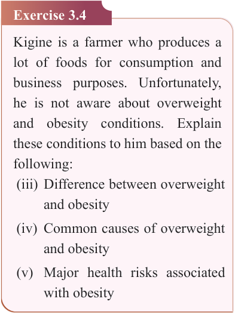
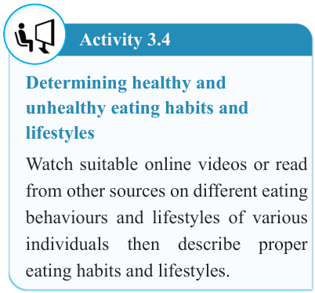

66


Food and Human Nutrition

Form Two


Activity 3.4
Determining healthy and unhealthy eating habits and lifestyles
Watch suitable online videos or read from other sources on different eating behaviours and lifestyles of various individuals then describe proper eating habits and lifestyles.
Exercise 3.4
Kigine is a farmer who produces a lot of foods for consumption and business purposes. Unfortunately, he is not aware about overweight and obesity conditions. Explain these conditions to him based on the following:
(iii) Difference between overweight and obesity
(iv) Common causes of overweight and obesity
(v) Major health risks associated with obesity
Causes of malnutrition
Malnutrition is common in developing countries, especially among children under five years as well as in pregnant women, lactating mothers, adolescents and the elderly. It is one of the contributing factors to high morbidity
and mortality rate among children under five years. Malnutrition is caused by various factors such as inadequate or excessive food intake, diseases, poor economic status of the family, shortage of food in the family and poor maternal and childcare. Other causes include inadequate access to safe water, poor sanitation and hygiene practices, poor health services and inadequate nutrition education.
Inadequate or excessive dietary intake
Inadequate
dietary
intake
causes
nutrient deficiencies that may cause poor growth and impaired immunity leading to increased risk of diseases. If individuals do not get adequate amounts of nutrients for their bodies in relation to their physiological and physical needs, they become malnourished. Inadequate dietary intake may be due to an inadequate amount of food consumed or inadequate nutrient content in the food.
The consumption of poorly prepared meals or lack of food varieties can also cause inadequate dietary intake leading to malnutrition.
In young children, inadequate dietary intake
is
caused
by
insufficient
breastfeeding, low meal frequency, small portion sizes, poor dietary diversity and inadequate feeding during sickness and recovery. Inadequate dietary intake among pregnant women can result from health conditions such as morning sickness that is characterized by nausea and vomiting.
17/09/2025 16:30